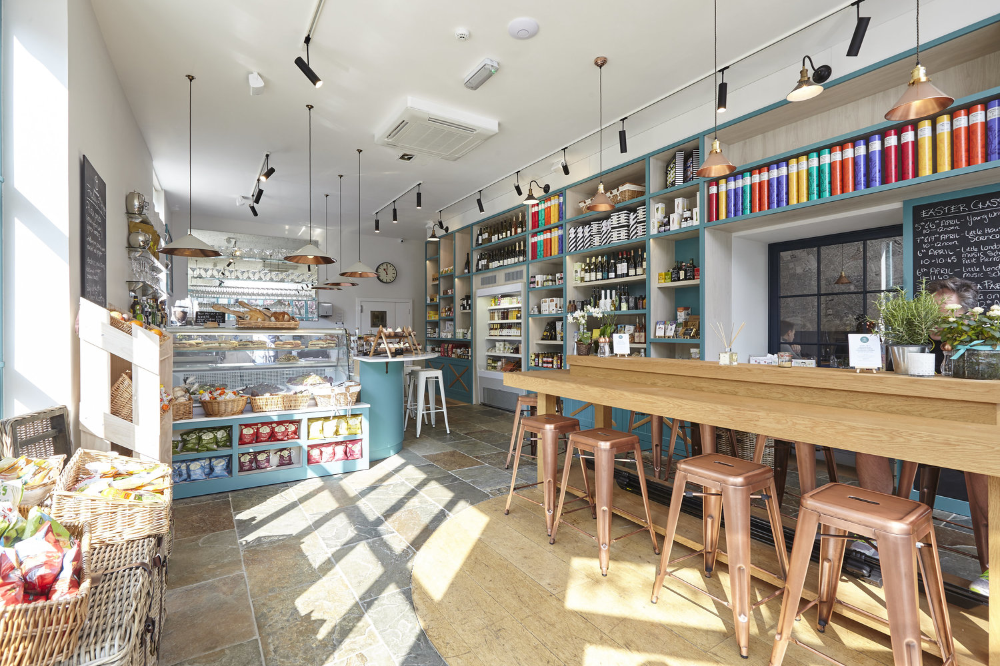
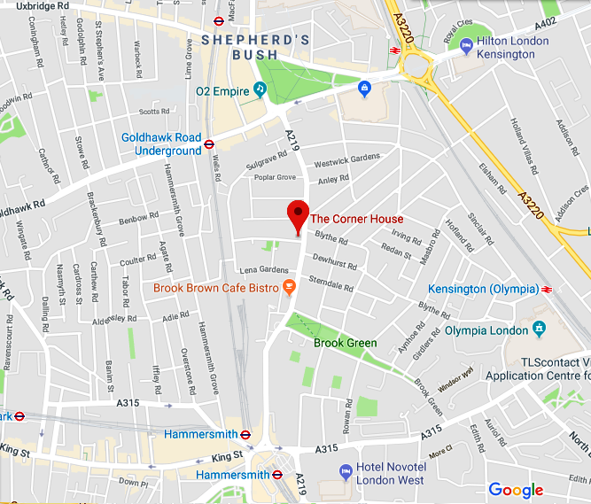
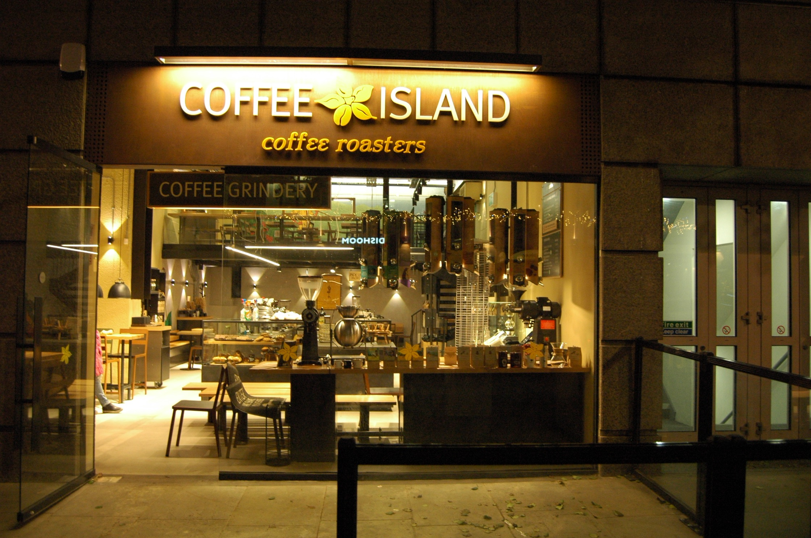
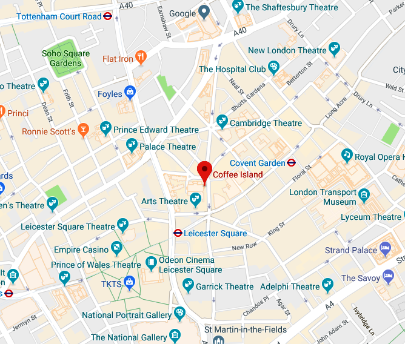
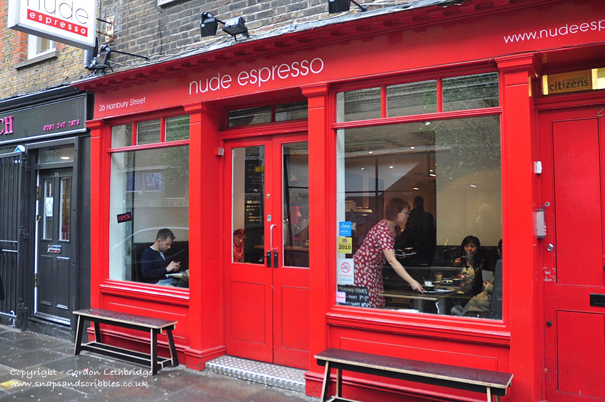
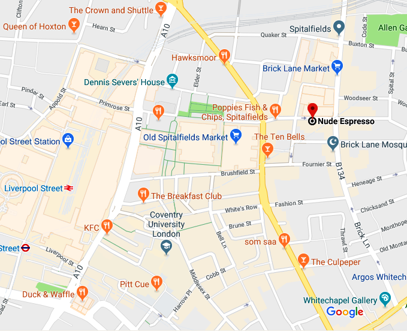

Coffee InfoPoint
Welcome to Coffee InfoPoint.
Here you can find information about some of the best coffee places around london where you can relax and enjoy a good coffee in a great atmosphere.
The Corner House
The Corner House is a stylish space where you can enjoy a good afternoon coffee accompanied by delicious food. They have several types of coffee including Fairtrade and a wide range selection of some specialities from "Caravan Coffee Roasters". This place has an amazing vibe and retro deco.
Contact
Address: 102-104 Shepherds Bush Rd, Hammersmith, London W6 7PD
Phone: 020 7603 1771
Nearest station: Hammersmith or Goldhawk Road Station.
Buses: 72, 220, 283, 295.
Coffee Island
Coffee Island belongs to a Greek chain of coffee houses and has an impressive minimalistic design. Tools of the trade include single origin coffees, chemex, V60 and Aeropress. Also there's a tray of hot sand for making Turkish Style Coffee, Coffee Grindery (where you can create your custom blend), Expresso and Brew bar, Tea & Herbals and Home Barista.
Contact
Address: 5 Upper St Martin's Ln, London WC2H 9NY
Phone: 020 7836 3007
Nearest station: Covent Garden or Leicester Square Station.
Buses: 24, 29, 176, N5, N20, N29, N41 and N279.
Nude Espresso
Nude Espresso is a cozy and small coffee with a variety of small production coffee farms from Brazil, Ethiopia and Costa Rica. They have other coffee locations such as Bell Lane and Spitalfields. You can enjoy a great afternoon here in this cozy place and smell the freshly brewed coffee grounds.
Contact
Address: 26 Hanbury St, London E1 6QR
Phone: 020 7836 3007
Nearest station: Liverpool Street Station.
Buses: 8, 26, 35, 42, 47, 48, 78 and other buses to Liverpool Street Station. From there takes 9min walking.
